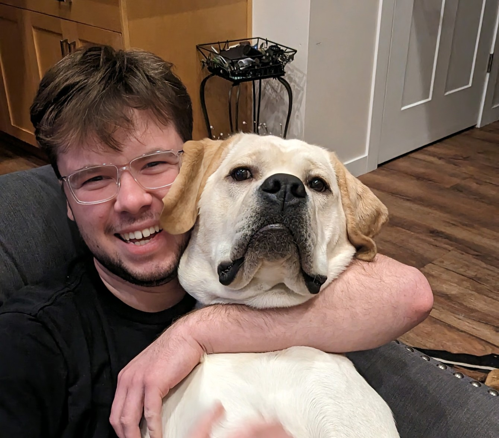
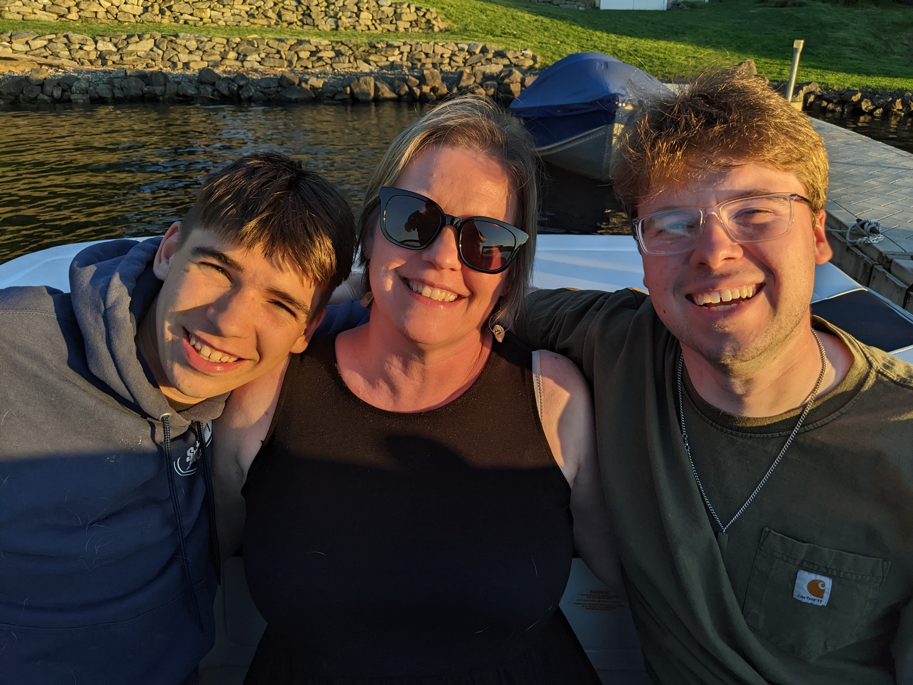

My name is Trenton Bergdahl, and I am a Software Engineering student at Washington State University! I discovered Software Engineering while taking a computer science course as a requirement of Electrical Engineering, and instantly fell in love with programming. To this day, I do not regret the choice to switch out of electrical engineering into software engineering. Software engineering allows for me to problem-solve every day and has become a passion of mine, which makes it fun to study other aspects of software beyond my classes. One of my favorite things in programming is coming up with a creative solution to an issue that utilizes data structures or pointers in ways that I've never seen before. I love seeing examples of other people's work that have been doing it a long time and stepping through their code line by line to understand it. Some of my hobbies include golfing, wakeboarding, and reading. I am excellent in team projects and have been the team leader on many of the group projects I have participated in here at WSU. One of my most valuable traits is that I learn new ideas and procedures very quickly, which makes me very adaptive and allows me to have a diverse knowledge of many different applications of software development. I have a direct communication style and do well in any role I am put in! I am looking for an internship that will push me to the next level by applying the basics that I've learned to real-world problems and keep expanding my problem solving abilities. I also hope to get some experience in a professional enviornment and further polish my soft skills.
